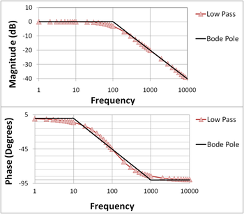

Villamosságtan II.
Ez az oldal a Villamosságtan II. című tantárgy tematikáját tartalmazza.
Feladata és célja:
A villamos hálózatok számolási módszerei elsajátítása idő‐ frekvencia és komplex frekvencia tartományban.
Tematikája
- Négypólusok fogalma, paraméterrendszerek, helyettesítő kapcsolások. Négypólusok összekapcsolása, lezárása. Átviteli mennyiségek.
- A Bode diagram alapesetei, konstans, elsőfokú tagok szerkesztése, másodfokú tagok, eredő átviteli függvény szerkesztése.
- Átviteli függvény ábrázolási módszerei. Nyquist diagram.
- Trenziens jelenségek vizsgálata. Differenciál egyenletek felírása, megoldása általános esetben.
- Laplace transzformáció definíciója, fontosabb tulajdonságai. Derivált és integrál transzformációja.
- Operátoros impedanciák.
- Bekapcsolási jelenségek. Energiamentes kezdőállapot.
- Speciális vizsgálójelek, egységugrás, Dirac-delta, egyszerű függvények Laplace transzformáltja.
- Inverz transzformáció, kifejtési tétel.